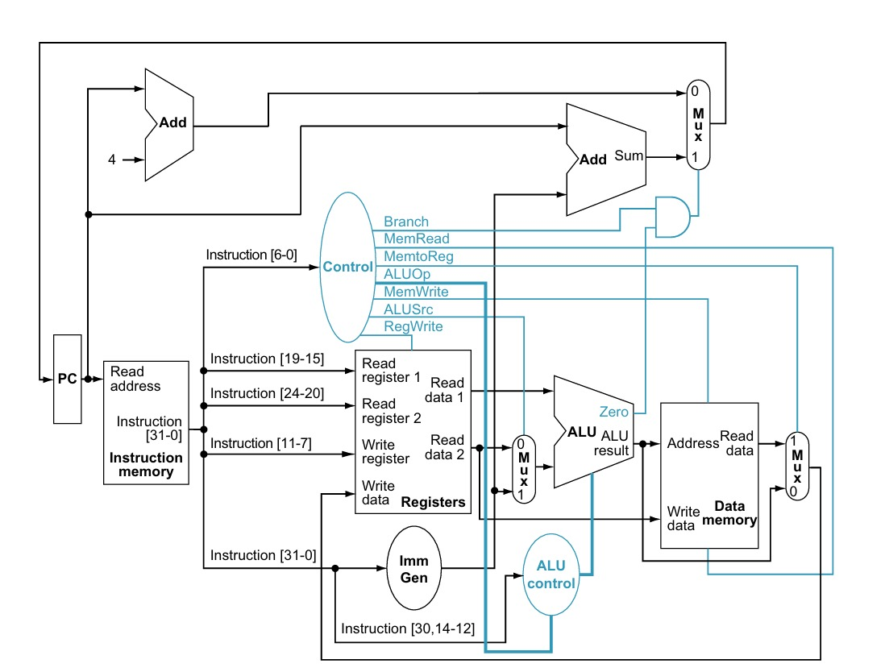
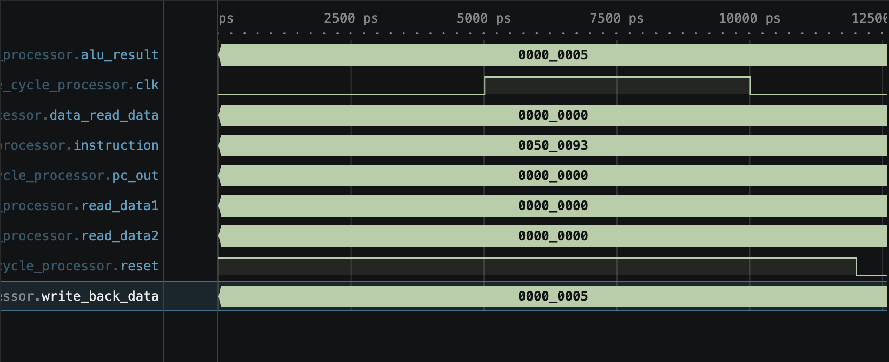

CE222 Course Project
Hassan Raza Shaikh
2026-05-08
Complete RISC-V inspired CPU executing any instruction in exactly one clock cycle
RISC-V | Verilog HDL | CE222 Digital Design
A single-cycle processor completes every instruction in one clock cycle.
Fetch → Decode → Execute → Memory → Write-back
Arithmetic & Logic - add, sub - and, or, xor
Memory Operations - lw (load word) - sw (store word)
Control Flow - beq (branch if equal)
module single_cycle_processor (
input clk, reset,
output [31:0] pc_out,
output [31:0] instruction,
output [31:0] alu_result,
output [31:0] write_back_data,
output [31:0] read_data1,
output [31:0] read_data2,
output [31:0] data_read_data
);
// All 32-bit RISC-V signals
// connected in one cycle
wire ALUSrc, MemtoReg;
wire RegWrite, MemRead;
wire MemWrite, Branch;
wire [1:0] ALUOp;
endmoduleHolds current instruction address
Updates to next PC every cycle
On each clock edge: - If reset: PC ← 0 - Else: PC ← next address
Stores program instructions
Outputs instruction at address combinationally
Generates control signals from opcode
Maps instruction opcode to bit patterns.
module control (
input [6:0] opcode,
output ALUSrc, MemtoReg,
output RegWrite, MemRead,
output MemWrite, Branch,
output [1:0] ALUOp
);
always @(*) begin
case(opcode)
7'b0110011: begin
RegWrite = 1'b1;
ALUSrc = 1'b0;
MemtoReg = 1'b0;
ALUOp = 2'b10;
end
7'b0010011: begin
RegWrite = 1'b1;
ALUSrc = 1'b1;
ALUOp = 2'b11;
end
default: begin
RegWrite = 1'b0;
end
endcase
end
endmoduleStores 32 registers (32-bit each)
Reads 2 ports simultaneously
Writes 1 port per cycle
Dual-read, single-write. Register 0 always zero.
module register_file (
input clk, reset, RegWrite,
input [4:0] read_reg1,
input [4:0] read_reg2,
input [4:0] write_reg,
input [31:0] write_data,
output [31:0] read_data1,
output [31:0] read_data2
);
reg [31:0] registers [0:31];
assign read_data1 =
(read_reg1 == 0) ? 32'b0
: registers[read_reg1];
assign read_data2 =
(read_reg2 == 0) ? 32'b0
: registers[read_reg2];
always @(posedge clk) begin
if (RegWrite && write_reg != 0)
registers[write_reg] <=
write_data;
end
endmoduleComputes arithmetic/logic operations
Sets zero flag for branches
32-bit result + 1-bit zero flag
module alu(
input [31:0] a, b,
input [3:0] alu_control,
output reg [31:0] result,
output zero
);
always @(*) begin
case(alu_control)
4'b0010: result = a + b;
4'b0110: result = a - b;
4'b0000: result = a & b;
4'b0001: result = a | b;
4'b0111: result = a ^ b;
default: result = 32'b0;
endcase
end
assign zero = (result == 0)
? 1'b1 : 1'b0;
endmoduleStores 32 × 32-bit data words
Synchronous writes, combinational reads
module data_memory (
input clk, MemWrite,
input MemRead,
input [31:0] address,
input [31:0] write_data,
output [31:0] read_data
);
reg [31:0] memory [0:31];
assign read_data = MemRead
? memory[address[6:2]]
: 32'b0;
always @(posedge clk) begin
if (MemWrite)
memory[address[6:2]]
<= write_data;
end
endmodule

All stages in ONE cycle:
Total time: 1 clock cycle ✓
INSTRUCTION: ADD R3, R1, R2 (opcode=110001)
┌─────────────────────────────┐
│ PC = 0x00001000 │
├─────────────────────────────┤
│ R1 = 5, R2 = 3 │
├─────────────────────────────┤
│ Execute: 5 + 3 = 8 │
├─────────────────────────────┤
│ Result: R3 ← 8 │
├─────────────────────────────┤
│ PC ← 0x00001004 │
└─────────────────────────────┘
After Cycle 1: R3 = 8 ✓Single-Cycle vs Pipelined:
SINGLE-CYCLE (This):
Cycle: |===I1===|===I2===|===I3===|
3 instructions: 3 cycles
Latency: HIGH, Throughput: OK
PIPELINED (Future):
Cycle: |I1|I2|I3|I4|I5|I6|
3 instructions: 4 cycles
Latency: LOW, Throughput: GREAT
Trade-off: Design complexity
for better performanceTclk ≥ TIF + TID + TEX + TMEM + TWB
Bottleneck: Every instruction waits for the slowest stage
Pipeline Timeline (Single-Cycle):
Instruction Timing
────────────────────────
I1: Fetch Decode Exec Mem WB
I2: Fetch Decode Exec Mem WB
I3: Fetch Decode Exec Mem WB
Cycle #: 1 2 3 4 5
Each instruction
takes 5 cycles minimum::: :::
Architecture: Complete single-cycle RISC-V processor with all five pipeline stages in one clock cycle
Components: PC, instruction memory, control unit, register file, ALU, data memory
Insight: Simple and elegant, but limited by critical path. Foundation for pipelined designs.
Next Steps: Pipeline architecture, hazard detection, cache design